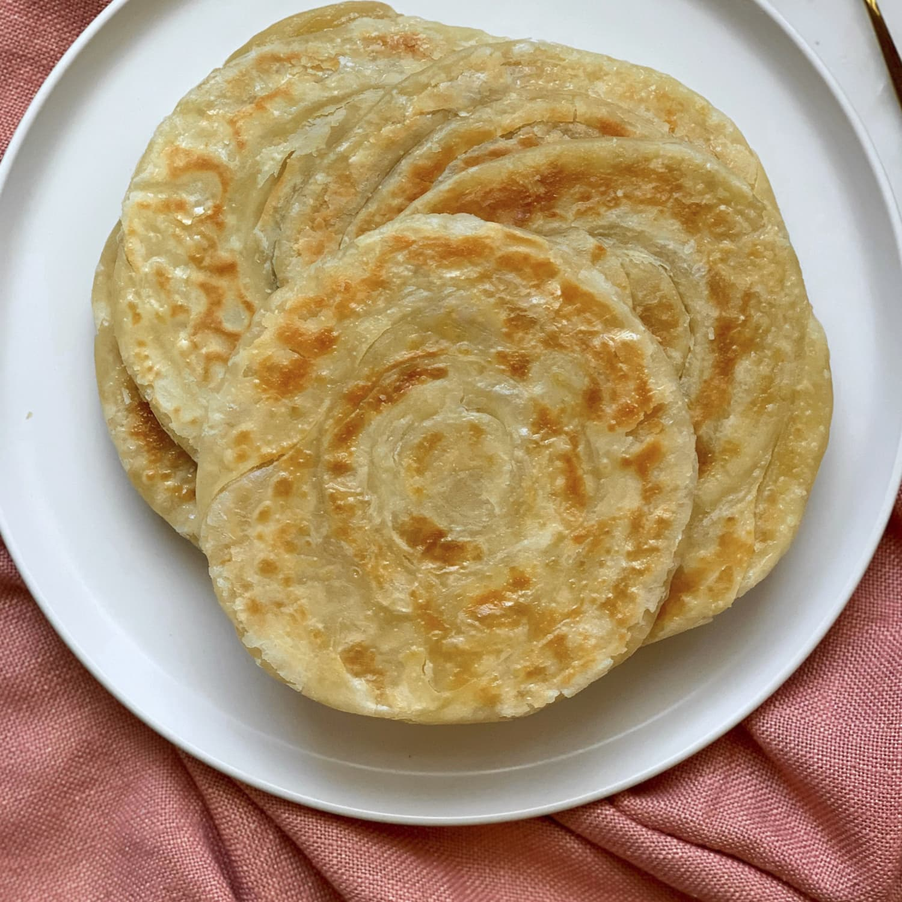

Paratha

Description
A warm, freshly baked flatbread to accompany any of the other recipes!
Ingredients
- 1 cup wheat flour
- 1 teaspoon cumin seeds
- 2 teaspoons oil
- 1/2 cup water
- Salt
- Butter
Steps
- Mix flour, cumin seeds, oil, and salt in a medium size bowl
- Add 1/2 cup water and knead the dough
- Divide into 6 equal parts and give each part a round shape
- Roll out dough patties on roti making board using a rolling pin
- Spread a few drops of oil on the dough and coat with dry flour
- Place it on a hot griddle and cook over medium flame
- Flip and cook on the other side
- Spread butter as per your liking